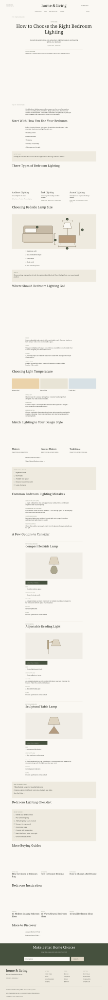
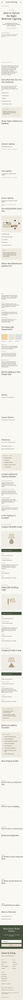

Wireframe 6 — Buying GuideWireframe 6 — Buying GuideEducation first · lighting layers · original sizing diagram · placement and temperature · style · measurement checklist · common mistakes · three supporting products · related guides · full footer.
Design sample with illustrative photography, product concepts and author details. Product specifications are unverified. The affiliate disclosure is shown for the affiliate-enabled version; omit it when a guide has no affiliate links. No table of contents.
Open desktop at full size · Open mobile at full sizeDESKTOP · 1440 PX
MOBILE · 390 PX